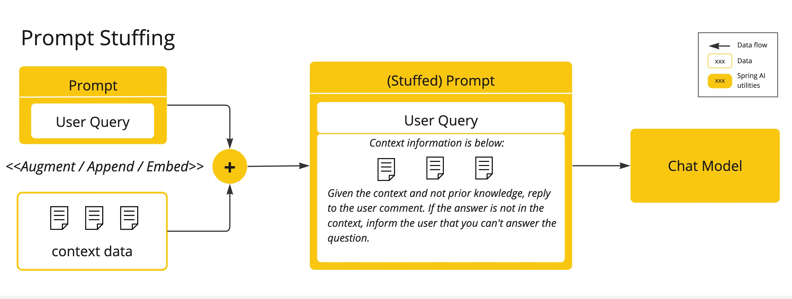
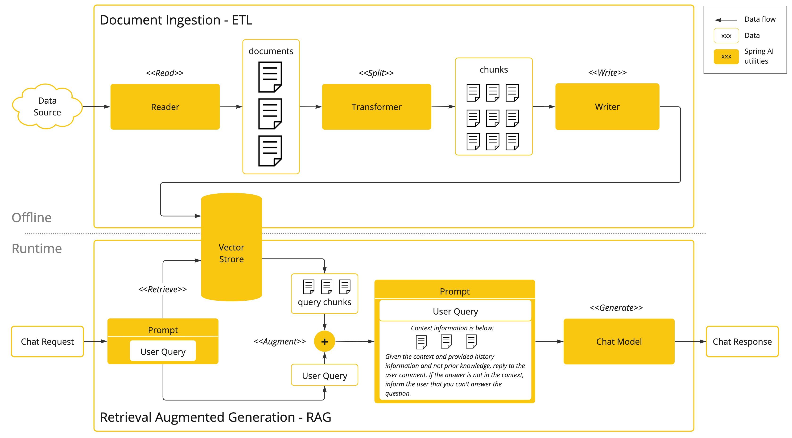

人工智能概念 #
本节介绍 Spring AI 使用的核心概念。建议您仔细阅读，以了解 Spring AI 实现背后的思想。
模型 #
人工智能模型是用于处理和生成信息的算法，通常模仿人类的认知功能。通过从大型数据集中学习模式和洞察，这些模型可以进行预测、文本、图像或其他输出，从而增强各行各业的各种应用。
AI 模型种类繁多，每种模型都适用于特定的用例。虽然 ChatGPT 及其生成式 AI 功能通过文本输入和输出吸引了众多用户，但许多模型和公司也提供多样化的输入和输出。在 ChatGPT 出现之前，许多人对文本转图像生成模型（例如 Midjourney 和 Stable Diffusion）着迷。
下表根据输入和输出类型对几种模型进行了分类：

Spring AI 目前支持将输入和输出处理为语言、图像和音频的模型。上表中的最后一行接受文本作为输入并输出数字，这通常被称为嵌入文本，代表 AI 模型中使用的内部数据结构。Spring AI 支持嵌入，以实现更高级的用例。
GPT 等模型的独特之处在于其预训练特性，正如 GPT 中的“P”（聊天生成预训练 Transformer）所示。这项预训练功能将 AI 转变为通用的开发工具，无需丰富的机器学习或模型训练背景。
提示 #
提示是基于语言的输入的基础，引导 AI 模型生成特定的输出。对于熟悉 ChatGPT 的人来说，提示可能看起来仅仅是在对话框中输入并发送到 API 的文本。然而，它包含的内容远不止于此。在许多 AI 模型中，提示的文本不仅仅是一个简单的字符串。
ChatGPT 的 API 在一个提示中包含多个文本输入，每个文本输入都被分配一个角色。例如，系统角色用于指示模型如何操作并设置交互的上下文。此外，还有用户角色，通常是来自用户的输入。
制作有效的提示既是一门艺术，也是一门科学。ChatGPT 是为人类对话而设计的。这与使用 SQL 之类的语言“提问”截然不同。人们必须像与人交谈一样与 AI 模型进行交流。
这种交互方式如此重要，以至于“提示工程”一词已发展成为一门独立的学科。目前，有越来越多的技术可以提高提示的有效性。投入时间精心设计提示可以显著提升最终效果。
分享提示已成为一种公共实践，学术界也正在积极开展这方面的研究。为了说明创建有效提示（例如，与 SQL 对比）是多么违反直觉， [ 最近的一篇研究论文]( https://arxiv.org/abs/2205.11916)发现，最有效的提示之一以“深呼吸，一步一步来”这句话开头。这应该能让你明白语言为何如此重要。我们尚未完全了解如何最有效地利用这项技术的早期版本，例如 ChatGPT 3.5，更不用说正在开发的新版本了。
提示模板 #
创建有效的提示涉及建立请求的上下文以及用特定于用户输入的值替换请求的各部分。
此过程使用传统的基于文本的模板引擎来创建和管理提示。Spring AI 为此使用了 OSS 库 [ StringTemplate]( https://www.stringtemplate.org/) 。
例如，考虑简单的提示模板：
Tell me a {adjective} joke about {content}.
在 Spring AI 中，提示模板可以类比为 Spring MVC 架构中的“视图”。它提供了一个模型对象（通常是 java.util.Map ），用于填充模板中的占位符。“渲染”后的字符串将成为提供给 AI 模型的提示内容。
发送给模型的提示的具体数据格式存在相当大的差异。提示最初只是一些简单的字符串，后来演变为包含多条消息，每条消息中的每个字符串都代表着模型的不同角色。
嵌入 #
嵌入是文本、图像或视频的数字表示，用于捕捉输入之间的关系。
嵌入的工作原理是将文本、图像和视频转换为浮点数数组（称为向量）。这些向量旨在捕捉文本、图像和视频的含义。嵌入数组的长度称为向量的维数。
通过计算两段文本的向量表示之间的数值距离，应用程序可以确定用于生成嵌入向量的对象之间的相似性。

作为探索 AI 的 Java 开发者，无需理解这些向量表示背后的复杂数学理论或具体实现。只需了解它们在 AI 系统中的作用和功能即可，尤其是在将 AI 功能集成到应用程序中时。
嵌入在实际应用中尤为重要，例如检索增强生成 (RAG) 模式。它们能够将数据表示为语义空间中的点，语义空间类似于欧氏几何的二维空间，但维度更高。这意味着，就像欧氏几何中平面上的点根据其坐标可以远近一样，在语义空间中，点的接近程度反映了含义的相似性。在这个多维空间中，关于相似主题的句子位置更近，就像图上彼此靠近的点一样。这种接近性有助于文本分类、语义搜索甚至产品推荐等任务，因为它允许 AI 根据相关概念在这个扩展的语义景观中的“位置”来识别和分组它们。
你可以把这个语义空间想象成一个向量。
代币 #
标记是 AI 模型运作的基石。输入时，模型将单词转换为标记。输出时，模型将标记转换回单词。
在英语中，一个标记大致对应一个单词的 75%。作为参考，莎士比亚全集总计约 90 万字，翻译过来大约有 120 万个标记。

或许更重要的是，代币=金钱。在托管 AI 模型的背景下，你的费用取决于使用的代币数量。输入和输出都会计入代币总量。
此外，模型还受到令牌限制的影响，这会限制单个 API 调用中处理的文本量。此阈值通常称为“上下文窗口”。模型不会处理任何超出此限制的文本。
例如，ChatGPT3 的代币限制为 4K，而 GPT4 则提供 8K、16K 和 32K 等不同选项。Anthropic 的 Claude AI 模型的代币限制为 10 万，而 Meta 的最新研究则提出了 100 万代币限制模型。
要使用 GPT4 总结莎士比亚全集，您需要设计软件工程策略来切分数据，并在模型的上下文窗口限制内呈现数据。Spring AI 项目可以帮助您完成这项任务。
结构化输出 #
即使你要求回复为 JSON 格式，AI 模型的输出通常也会以 java.lang.String 的形式出现。它可能是正确的 JSON，但它并非 JSON 数据结构。它只是一个字符串。此外，在提示中要求“需要 JSON”并非 100% 准确。
这种复杂性导致了一个专门领域的出现，该领域涉及创建提示以产生预期的输出，然后将生成的简单字符串转换为可用于应用程序集成的数据结构。

[ 结构化输出转换](api/structured-output-converter.html#_structuredoutputconverter)采用精心设计的提示，通常需要与模型进行多次交互才能实现所需的格式。
将您的数据和 API 引入 AI 模型 #
如何为人工智能模型配备尚未训练过的信息？
请注意，GPT 3.5/4.0 数据集仅持续到 2021 年 9 月。因此，该模型表示，它不知道需要该日期之后知识的问题的答案。有趣的是，该数据集的大小约为 650GB。
有三种技术可以定制 AI 模型来整合您的数据：
- 微调 ：这项传统的机器学习技术涉及调整模型并更改其内部权重。然而，对于机器学习专家来说，这是一个极具挑战性的过程，而且由于 GPT 等模型的规模庞大，会极其耗费资源。此外，某些模型可能不提供此选项。
- 提示填充 ：一种更实用的替代方案是将数据嵌入到提供给模型的提示中。考虑到模型的令牌限制，需要采用一些技术在模型的上下文窗口中呈现相关数据。这种方法通俗地称为“填充提示”。Spring AI 库可以帮助您基于“填充提示”技术（也称为检索增强生成 (RAG)） 实现解决方案。

- 工具调用 ：此技术允许注册工具（用户定义的服务），将大型语言模型连接到外部系统的 API。Spring AI 大大简化了支持工具调用所需的代码。
检索增强生成 #
一种称为检索增强生成 (RAG) 的技术已经出现，用于解决将相关数据纳入准确的 AI 模型响应提示的挑战。
该方法涉及批处理式编程模型，其中作业从文档中读取非结构化数据，进行转换，然后将其写入矢量数据库。从高层次上讲，这是一个 ETL（提取、转换和加载）流程。矢量数据库用于 RAG 技术的检索部分。
将非结构化数据加载到矢量数据库的过程中，最重要的转换之一是将原始文档拆分成更小的块。将原始文档拆分成更小块的过程包含两个重要步骤：
RAG 的下一个阶段是处理用户输入。当 AI 模型需要回答用户的问题时，该问题和所有“相似”的文档片段都会被放入发送给 AI 模型的提示中。这就是使用矢量数据库的原因。它非常擅长查找相似内容。

- ETL 管道提供了有关协调从数据源提取数据并将其存储在结构化向量存储中的流程的更多信息，确保数据在传递给 AI 模型时具有最佳的检索格式。
- ChatClient - RAG 解释了如何使用 QuestionAnswerAdvisor 在您的应用程序中启用 RAG 功能。
工具调用 #
大型语言模型 (LLM) 在训练后被冻结，导致知识陈旧，并且无法访问或修改外部数据。
[ 工具调用](api/tools.html)机制解决了这些缺陷。它允许您将自己的服务注册为工具，将大型语言模型连接到外部系统的 API。这些系统可以为 LLM 提供实时数据，并代表 LLM 执行数据处理操作。
Spring AI 极大地简化了您编写支持工具调用所需的代码。它为您处理工具调用对话。您可以将工具作为 @Tool 注解的方法提供，并在提示选项中提供，以便模型可以使用它。此外，您还可以在单个提示中定义和引用多个工具。

请遵循[ 工具调用](api/tools.html)文档以获取有关如何在不同的 AI 模型中使用此功能的更多信息。
评估人工智能的反应 #
有效地评估人工智能系统响应用户请求的输出，对于确保最终应用的准确性和实用性至关重要。一些新兴技术使得预训练模型本身能够实现这一目标。
此评估过程涉及分析生成的响应是否符合用户意图和查询上下文。相关性、连贯性和事实正确性等指标用于衡量 AI 生成的响应的质量。
一种方法是同时呈现用户的请求和 AI 模型的响应，查询响应是否与提供的数据一致。
此外，利用矢量数据库中存储的信息作为补充数据可以增强评估过程，有助于确定响应相关性。
Spring AI 项目提供了一个 Evaluator API，目前支持使用一些基本策略来评估模型响应。更多信息，请参阅[
评估测试](api/testing.html)文档。